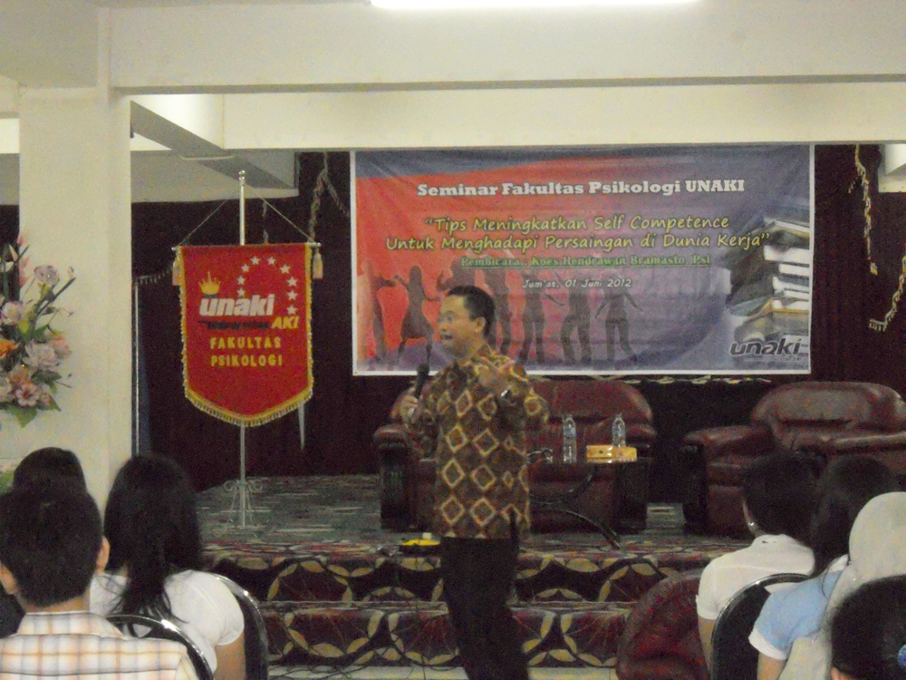

PSIKOLOGI S1
Kemajuan pesat terhadap IPTEK dan perkembangan ekonomi Indonesia pada khususnya maka semakin kompleks permasalahan yang dihadapi manusia, sehingga dibutuhkan seorang ahli dibidang psikologi yang handal. Maka Fakultas Psikologi UNAKI memberi kesempatan bagi Anda untuk menjadi seorang psikolog yang profesional dan siap menghadapi tantangan hidup yang semakin kompleks. Untuk menunjang kualitas belajar-mengajar UNAKI bekerja sama dengan Rumah Sakit, instansi pemerintah dan swasta, guna praktek mahasiswa secara nyata. Selain itu dilengkapi sarana laboratorium Psikologi. Whatever you are, be a good one. -Abraham Lincoln Visi Menjadi Program Studi yang unggul berdaya saing nasional, dalam bidang ilmu pengetahuan Psikologi dengan mengedepankan teknologi informasi atas dasar keimanan kepada Tuhan Yang Maha Esa. Misi 1. Selalu menjaga dan meningkatkan mutu pendidikan atas dasar keimanan kepada Tuhan Yang Maha Esa, dengan memanfaatkan teknologi informasi. 2. Menjadi program studi yang cerdas dengan berpikir logis, kritis dan kreatif. 3. Melaksanakan Tri Dharma Perguruan Tinggi dalam upaya menciptakan dan meningkatkan mutu pendidikan dan penerapan ilmu pengetahuan dalam bidang Psikologi sesuai dengan kebutuhan dan perkembangan industri yang relevan. 4. Menciptakan dan meningkatkan hubungan kerjasama sinergis yang mutualisme dengan stakeholder dalam rangka pemberdayaan jasa pendidikan Program Studi Sarjana Psikologi Pendidikan Psikologi di Fakultas Psikologi Universitas AKI Semarang bertujuan untuk menciptakan lulusan yang memiliki kompetensi sebagai berikut: 1. Menghasilkan lulusan berkemampuan akademik yang berkualitas dalam bidang ilmu Psikologi, beriman dan bertaqwa kepada Tuhan Yang Maha Esa . 2. Mengembangkan dan menciptakan IPTEKS dalam bidang ilmu Psikologi sesuai dengan kebutuhan dan perkembangan masyarakat. 3. Menerapkan dan menyebarluaskan IPTEKS dalam bidang ilmu Psikologi. 4. Menerapkan sikap dan perilaku profesional berdasarkan kode etik psikologi. Untuk mencapai kompetensi lulusan tersebut, desain kurikulum Program Pendidikan Sarjana Psikologi diwajinkan menyelesaikan beban studi sebanyak 147 SKS. Fasilitas Fakultas Psikologi UNAKI Semarang Memiliki gedung dengan luas 4642,1 m2. Dilengkapi dengan ruang kuliah nyaman, perpustakaan dengan koleksi yang memadai, dan fasilitas internet/hot spot di area kampus. Fakultas psikologi juga dilengkapi dengan laboratorium komputer dengan multimedia, ruang konsultasi, ruang kegiatan mahasiswa, dan sarana olah raga. Profil Mahasiswa Input mahasiswa Fakultas Psikologi berasal dari lulusan SMA/MA yang menyelenggarakan pendidikan formal setara SMA/MA dari seluruh Indonesia. Oleh karena itu mereka sangat heterogen. Namun demikian mereka memiliki rasa kekeluargaan, kebersamaan, dan persaudaraan yang kuat. Profil Lulusan Mahasiswa lulusan Fakultas Psikologi bekerja di berbagai bidang seperti lembaga pemerintah, perusahaan swasta, badan usaha milik negara, dan LSM dalam bidang sumber daya manusia, dan pengembangan organisasi. Sebagian lagi ada yang bekerja dalam bidang pendidikan sebagai tenaga edukatif, konselor atau terapis. Selain itu,beberapa lulusan melanjutkan studi ke jenjang magister di dalam dan luar negeri.  Kegiatan Mahasiswa Mahasiswa dapat mengikuti kegiatan kemahasiswaan pada tingkat universitas dan fakultas sesuai dengan bakat, minat, dan potensi diri masing-masing. Minat dan bakat mahasiswa dapat disalurkan melalui Unit-Unit Kegiatan Kemahasiswaan (UKM) yaitu untuk Olah Raga (meliputi Futsal, Bola Voli, Bola Basket, Tenis Meja, Biliar, Catur, Bridge); Kerohanian (meliputi Unit Kegiatan FKI (Forum Komunikasi Islam), PKKMK, dan PMK); Pecinta Alam (Mapala). Laboratorium Psikologi Laboratorium psikologi berfungsi sebagai media untuk melatih dan mengembangkan kemampuan mahasiswa di bidang psikologi. Program laboratorium meliputi praktek dalam bidang psikodiagnostik, konseling, analisis data maupun penelitian di bidang psikologi dan pengukuran psikologi. Konsentrasi - Psikologi Bisnis - Psikologi Teknologi Prospek Lulusan Tenaga profesional di bidang personalia dan manajemen sumber daya manusia, motivator handal, trainer pengembangan kepribadian, konsultan sumber daya manusia perusahaan, terapis dan konselor psikologi, dan lain-lain.